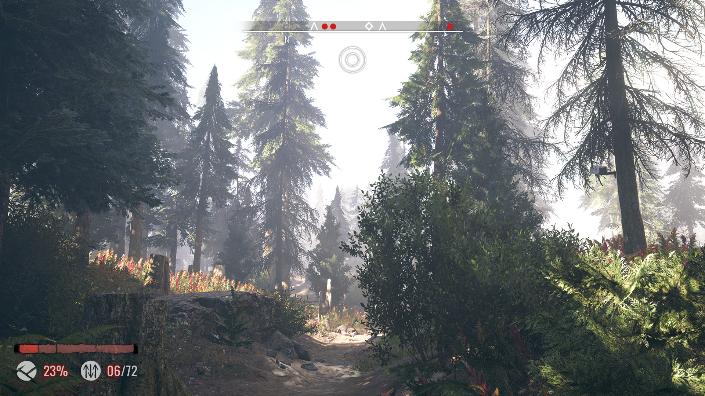

Click here for the original entry.
In 2020, I participated in Ubisoft's annual student competition, Ubisoft NEXT, and the following entry was a finalist in the UI category.
Final loadout design with motion.
Final HUD design with motion.
Final loadout still.

Final HUD still.

Final HUD (combat) still.
The project called for the creation of a UI design for an existing Ubisoft IP. I chose to create designs for Farcry Primal. The brief calls for:
For this redesign, I wanted the final result to be clean, yet naturalistic, and focused on simple forms, while still trying to maintain clarity, the bright colour palette, and texture. I found I was discovering more ways to make my design accessible without being overbearing, and wanted elements to be visually accessible without making it obvious.
I explored markmaking to incorporate a sense of texture while also drawing directly from nature, and tried to incorporate them without making them distracting.
In terms of the colour palette, I decided I wanted the background overlay to draw colours from the gameplay, and opted fora more implistic overlay.

Original submission.
Experimenting with laying out elements in different ways. It was easier to have a better idea of the final result becuse I could recycle assets from the first design.
Expanding the overlay, adding a tint to establish a more colourful palette.
I decided to incorporate the background's values to add colour, while still adding enough contrast that type/elements were still easily visible.

Weapons I illustrated for the original competition.

Original submission.
Original submission.
I focused on simplifying elements and reducing visual clutter, especially with combat.
I tie texture into the HUD through navigation icons, and representing concepts with simply, identifying shapes.